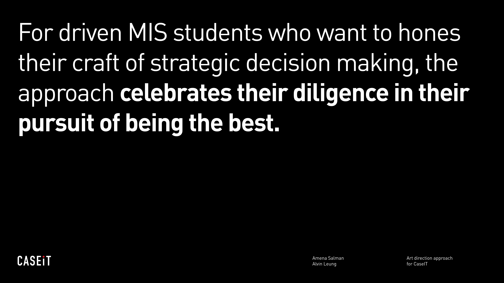
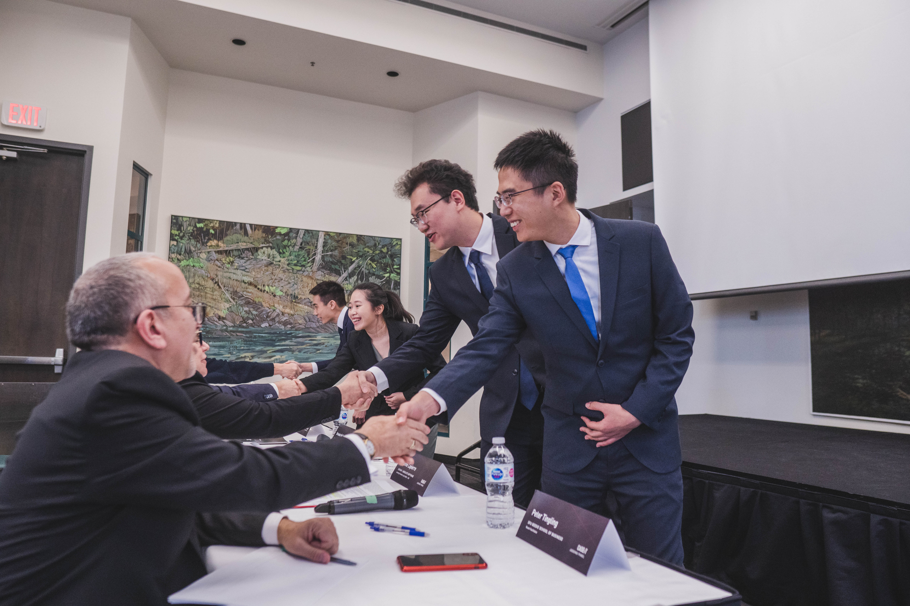
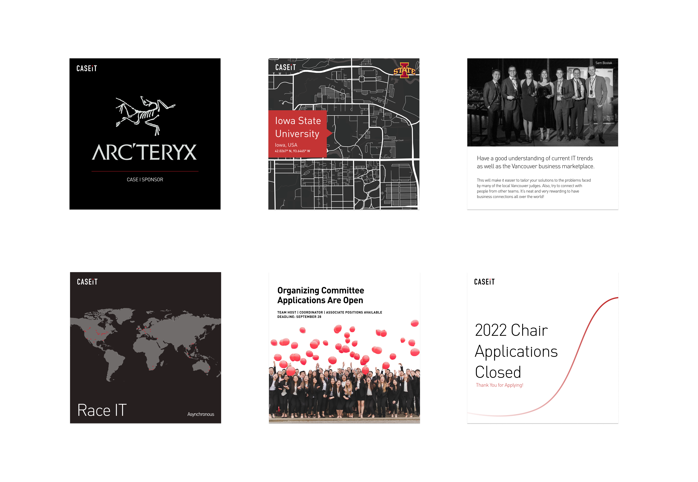
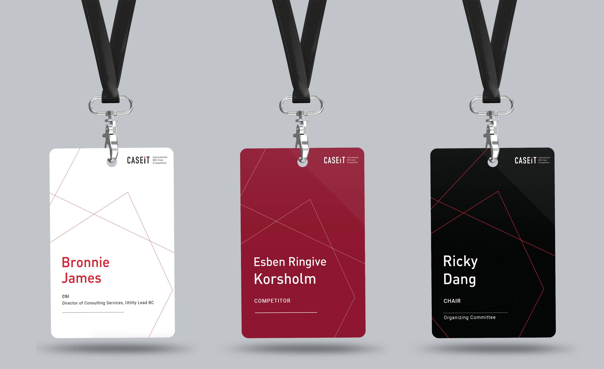

CaseIT is a locally based case competition that hosts over 20 schools from around the world for a week in February.
For my first year in CaseIT I was working on designing material for both print and digital materials. In my second year, we had to switch to a virtual competition that forced us in the marketing team to really rethink what CaseIT is and how we can convey that through an online experience.
Through multiple workshops with the Chairs of CaseIT and the rest of the Marketing team, we helped transcribe the value proposition and guiding principles of CaseIT that previously were implicit and based on a general environment. This helped us develop guiding principles and a core brand that each successive year could develop their art direction on.
As designers still learning to be good designers, we had a lot of bumps and misdirections along the way. We initially over inflated the importance of our art direction, and it took a lot (;-;) of iterations before we realized that we were missing brand attributes and the value propositions. However, CaseIt was a turning point in my growth as a designer, as it taught me how to work with established brands rather than hypotheticals.